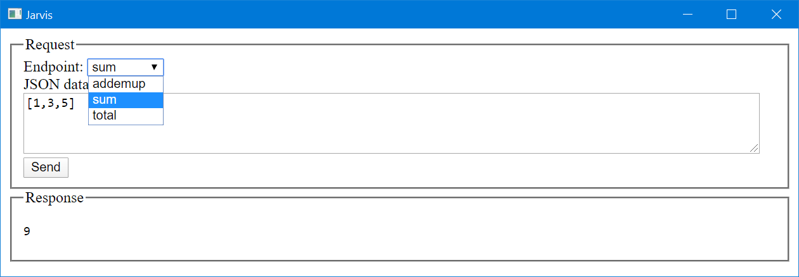

Jarvis
| Repository | https://github.com/dyalog/Jarvis/ |
| Copyright | Copyright © 2019-2022 Dyalog, LTD |
This documentation is very much a work in progress. Expected completion is November 2022.
Introduction
Jarvis is an HTTP server that makes it easy to create a web service to provide access to your APL code from the web or a local network.
Any client program written in any language on any platform that can process HTTP requests can access a Jarvis-based web service. This vastly increases the potential audience for your application - the client can be a standard web browser, a phone app, a browser-based app, or a custom client written in a language like Python or C# and yes, even APL.
The name Jarvis is a pseudo-acronym for JSON and REST Service ("vice" becomes "vis") and was also inspired by J.A.R.V.I.S. (Just A Rather Very Intelligent System) from the Marvel Cinematic Universe.
Design Goals
Jarvis is designed to make it very easy for an APLer to create web services without requiring in-depth knowledge of web service frameworks. In designing Jarvis we've attempted to
- Make Jarvis' default behavior simple and applicable to many use cases
- Make few assumptions about what the user actually needs to do
- Provide hooks to allow the user to tailor or extend Jarvis' behavior if needed
Create an APL Web Service in 5 Minutes
If you know how to write a monadic, result-returning APL function, you're ready to run your first Jarvis-based web service. Here's how:
-
If you already have a copy of the
Jarvisclass, skip to step 3. Otherwise, load theHttpCommandutility so that we can download a copy of Jarvis and also useHttpCommandfor testing our web service.]load HttpCommand -
Next, download a copy of Jarvis. Note, the following statement simply downloads the latest, perhaps pre-release, version of the Jarvis class for this quick demonstration. For a production environment, you should use a released version of Jarvis.
HttpCommand.Fixboth downloads and runs⎕FIXon an APL code file from the web.HttpCommand.Fix 'https://raw.githubusercontent.com/Dyalog/Jarvis/master/Source/Jarvis.dyalog -
Write one or more monadic, result-returning APL functions. For instance:
)cs # sum ← {+/⍵} ⍝ dfns work total ← +/ ⍝ derived functions work ⎕FX '∇r←addemup a' 'r←+/a' '∇' ⍝ and of course, tradfns work -
You can now run your web service running on port 8080 and serving code from the # (root) namespace.
(server rc)←Jarvis.Run 8080 # 2021/11/22 @ 15:12:06 - Conga copied from C:\Program Files\Dyalog\Dyalog APL-64 18.2 Unicode/ws/conga 2021/11/22 @ 15:12:06 - Local Conga reference is #.Jarvis.[LIB] 2021/11/22 @ 15:12:06 - Jarvis started in "JSON" mode on port 8080 2021/11/22 @ 15:12:06 - Serving code in # 2021/11/22 @ 15:12:06 - Click http://localhost:8080 to access web interface
If the server started successfully, you'll see messages similar to those above and server will be a reference to the server instance and the return code rc should be 0.
Now, let's test our service using Jarvis' built-in HTML interface. You could click on the link displayed or open your favorite browser to http://localhost:8080, but just for fun, we'll use Dyalog's HTMLRenderer object.
'h' ⎕WC 'HTMLRenderer' ('URL' 'localhost:8080')

We select the Endpoint (APL function) we want from the drop down list, enter some valid JSON data ([1,3,5]), and press Send to send the request to Jarvis. Jarvis' response is then sent back and displayed.
We can also use HttpCommand to call the web service.
(url data headers)←'localhost:8080/total' '[1,3,5]' ('content-type' 'application/json')
(HttpCommand.Do 'POST' url data headers).Data
9
We can use the cURL command to call the web service.
C:\> curl -H "content-type: application/json" -X POST -d [1,3,5] http://localhost:8080/addemup
9
To stop the service, simply type server.stop
Interested? Read on...
Usage ↵
Terminology
Endpoint
In the context of Jarvis, an endpoint is the last segment of a URL up to the query string, if any. When using Jarvis' JSON paradigm, the endpoint represents the name of the APL function used to service that endpoint. When using Jarvis' REST paradigm, the endpoint identifies the resource to acted upon by the request.
HTTP method
The HTTP protocol defines several request "methods" that a client may use to request the server to perform different operations. When you open a web browser on a URL, the browser is typically using the GET HTTP method to retrieve the requested content. Other HTTP methods include POST, PUT, DELETE, PATCH, and HEAD; each one designed to indicate the operation the server should perform.
JSON
JSON stands for JavaScript Object Notation and is a flexible notation for representing data arrays and objects. Dyalog APL has a system function, ⎕JSON, which easily converts between JSON and APL arrays/namespaces.
REST
REST stands for REpresentational State Transfer and is a design pattern for APIs. An API that follows this design pattern is termed "RESTful". When a RESTful API is called, the server will transfer to the client a representation of the state of the requested resource.
Paradigms
Jarvis supports two operational paradigms that we term JSON and REST. A Jarvis server can run only one paradigm at a time. One of the first decisions you'll need to make when using Jarvis is which web service paradigm to use. The paradigm will determine protocol for how a client will interact with Jarvis. This section provides information to help you decide which paradigm is most appropriate for your application.
The JSON paradigm
The JSON paradigm may seem quite natural to the APLer in that the endpoints (functions) take a data argument and return a data result. The argument and result can be as complex as you like, provided that they can be represented using JSON.
- The endpoints are the actual APL functions that are called. You can specify which functions you want to expose as endpoints for your service to the client.
- The client uses the HTTP POST method and passes the parameters for the request as JSON in the request body.
- The payload (body) of the request is automatically converted by Jarvis from JSON to an APL array and passed as the right argument to your function.
- Your function should return an APL array which Jarvis then converts to JSON and returns to the client in the response.
- Your application needs to know nothing about JSON, HTTP or web services.
The REST paradigm
One common feature of RESTful web services is that they tend to use standard HTTP methods to perform operations on resources. A resource is specified by the URL of the request. The resource could be a physical resource like a file or a virtual resource that is constructed dynamically by your code. There are several other "RESTful design" principles or constraints, but they are beyond the scope of this document.
- Operations are typically implemented corresponding to standard HTTP methods:
- GET – read a resource
- POST – create a resource
- PUT – update/replace a resource
- PATCH – update/modify a resource
- DELETE – delete a resource
- With Jarvis, you specify which methods you want your service to support. (Jarvis even allows you to create your own method names as well.)
- You then implement an APL function with the same name as each method.
- Resources are specified in the request URL.
- Depending on how you design the service API, parameters, if any, can be passed in the URL, the query string, the body of the request, or some combination thereof.
- The function you write is passed the request object and it's up to you to parse the URL, payload, headers, and query parameters to determine what to do and what the arguments are.
- You decide on the content type and format of the payload of the response. Common response content types for RESTful web services are JSON, XML or HTML.
- In general, the JSON paradigm is quicker and easier to implement, but a properly implemented REST paradigm
JSON contrasted with REST
In many cases, the same functionality can be implemented using either paradigm.
With JSON, endpoints are the names of APL functions that you want to expose with your web service. You write one APL function per operation you want to perform.
With REST, endpoints identify resources and the HTTP method determines the operation to perform on the resource. You write one APL function for each HTTP method your web service will support.
To compare the two paradigms, let's imagine you want to retrieve the total of invoice 45 for customer 231.
JSON Example
One way to implement this using the JSON paradigm might be to:
- specify that the client should provide the arguments as a JSON object with a "customer" element and an "invoicenum" element. For this example, it might look like
- write an APL function called
GetInvoiceTotalwhich would take a namespace as its argument. The namespace will contain elements named "customer" and "invoice"
∇ namespace← GetInvoiceTotal namespace;costs
[1] ⍝ the namespace argument was created by Jarvis from the JSON object in the request
[2] costs←ns.customer GetInvoiceItems ns.invoice ⍝ retrieve the invoice item costs pseudo-code
[3] namespace.total←+/costs ⍝ insert a total element into the namespace
∇
- Jarvis will then convert the result, in this case the updated namespace, to JSON
{"customer":231,"invoicenum":45,"total":654.32}and return it to the client
REST Example
Using the REST paradigm, you might specify a resource like /customer/231/invoice/45/total. Since this is a "read" operation, you would use the HTTP GET method to retrieve it.
- You would write a function named GET (the same as the HTTP method) which would be passed the HTTP request object. The Endpoint element of the request object will be '/customer/231/invoice/45/total'.
- Your function would need to parse the endpoint to determine what is being requested and then retrieve the information.
- Your function would set the content-type for the response payload as well as format the retrieved information and assign it to the payload.
Ended: Usage
Reference ↵
Settings ↵
Ended: Settings
HttpCommand
Configuration
Conga Dependence
Jarvis relies on Conga, the Dyalog TCP/IP utility library, for its communications. Conga itself requires two components:
- the platform-dependent Conga shared library
- Conga namespace which is platform independent and implements the interface from APL to the shared library
Configuration Settings
| Setting Name | Description | Example(s) |
|AcceptFrom|Conga setting to restrict which IP addresses Jarvis will accept requests from||
Ended: Reference
Advanced Topics ↵
Ended: Advanced Topics
About ↵
MIT License
Copyright (c) 2021 Dyalog
Permission is hereby granted, free of charge, to any person obtaining a copy of this software and associated documentation files (the "Software"), to deal in the Software without restriction, including without limitation the rights to use, copy, modify, merge, publish, distribute, sublicense, and/or sell copies of the Software, and to permit persons to whom the Software is furnished to do so, subject to the following conditions:
The above copyright notice and this permission notice shall be included in all copies or substantial portions of the Software.
THE SOFTWARE IS PROVIDED "AS IS", WITHOUT WARRANTY OF ANY KIND, EXPRESS OR IMPLIED, INCLUDING BUT NOT LIMITED TO THE WARRANTIES OF MERCHANTABILITY, FITNESS FOR A PARTICULAR PURPOSE AND NONINFRINGEMENT. IN NO EVENT SHALL THE AUTHORS OR COPYRIGHT HOLDERS BE LIABLE FOR ANY CLAIM, DAMAGES OR OTHER LIABILITY, WHETHER IN AN ACTION OF CONTRACT, TORT OR OTHERWISE, ARISING FROM, OUT OF OR IN CONNECTION WITH THE SOFTWARE OR THE USE OR OTHER DEALINGS IN THE SOFTWARE.